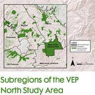
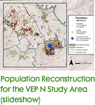
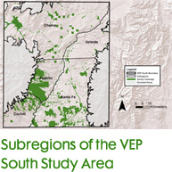
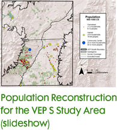

|
7. What did the VEP learn by reconstructing population size and how it changed over time? Video Chapter 3: Question 7 Mark Varien, Ph.D. Scott Ortman, Ph.D. |
|  |  |  |  |
| Copyright © 2015 by Crow Canyon Archaeological Center. All rights reserved. |